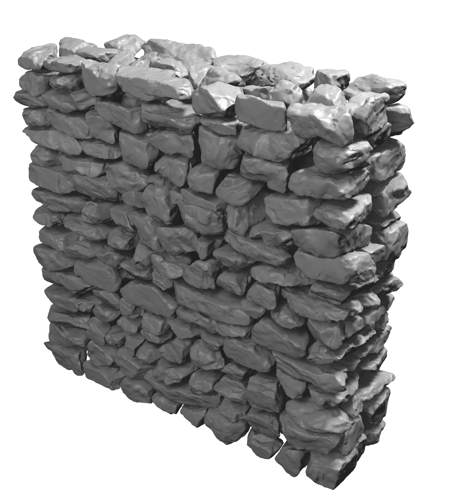
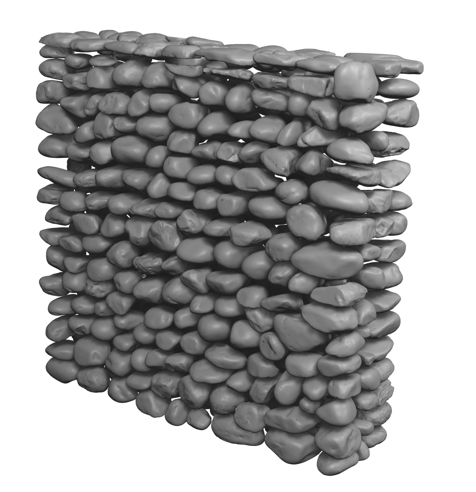
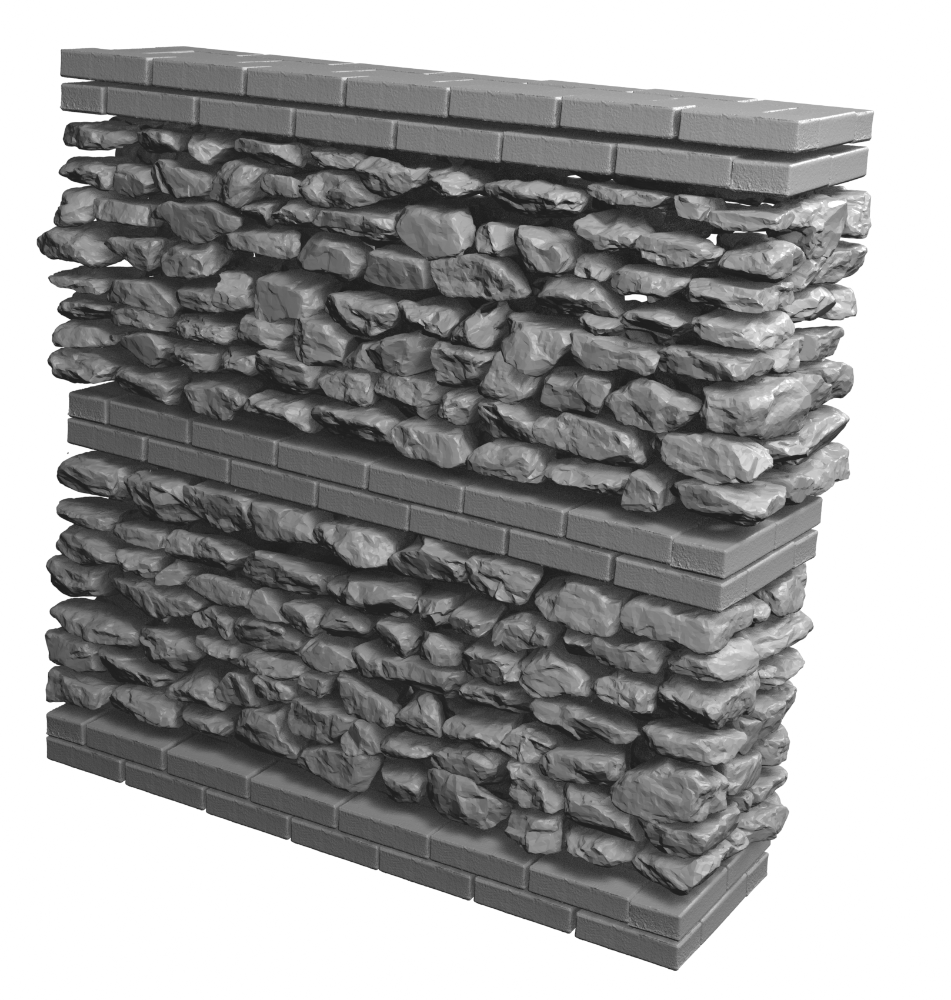

About the Competition
Dear Participants,
We are pleased to announce a blind prediction competition focused on the monotonic in-plane shear–compression response of multi-leaf rubble stone masonry walls with diverse microstructures.
Participants will receive:
- Material property data for each wall
- Loading and boundary conditions
- Detailed geometrical digital twins capturing the 3D shape and arrangement of stones
Participants are invited to submit predictions before the experimental tests, which will take place in May 2026 at the Structural Engineering Platform (GIS), EPFL, Lausanne, Switzerland.
This initiative aims to compare modelling approaches, advance understanding of masonry behaviour, and validate numerical predictions against experimental data.

Experimental Campaign
Seven full-scale walls have been built with distinct microstructures. Three out of seven walls have been selected for blind predictions ahead of testing.
Wall 01
- Stone type: Limestone
- Stone dimensions: 20–25 cm (70–80%), remainder 10–20 cm
- Mortar: Lime-based (NHL 5), binder-to-sand 1:3, water-to-binder 0.7
Wall 02
- Stone type: Rounded river stones
- Stone dimensions: 10–20 cm (70–80%), remainder 20–25 cm
- Mortar: Lime-based (NHL 5), binder-to-sand 1:3, water-to-binder 0.7
Wall 03
- Stone type: Limestone
- Stone dimensions: 10–20 cm (70–80%), remainder 20–25 cm
- Mortar: Lime-based (NHL 5), binder-to-sand 1:3, water-to-binder 0.7
- Bricks lacing: Provided at bottom, center, and top
Registration
Please register if you intend to participate in this competition.
Evaluation Criteria
Evaluation criteria will be shared on upcoming dates.
Download Data
The first set of files, including guidelines and instructions, can be downloaded as a PDF from here.
The material mechanical properties are available for download here.
Geometrical digital twins of the walls are available on Zenodo.
Forms to be filled for submitting predictions can be downloaded here.
Important Dates
- Submission Deadline: April 30, 2026
Acknowledgment
The experimental tests are funded by the Swiss National Science Foundation (SNSF) through the grant agreement No. 200021_219862 (Behaviour of multi-leaf stone masonry walls under in-plane shear-compression loading). This opportunity is gratefully acknowledged.
Contact
If you have any questions regarding the blind prediction competition, please feel free to contact:
- Mati Ullah Shah – mati.shah@epfl.ch
- Dr. Savvas Saloustros – savvas.saloustros@epfl.ch
- Prof. Katrin Beyer – katrin.beyer@epfl.ch